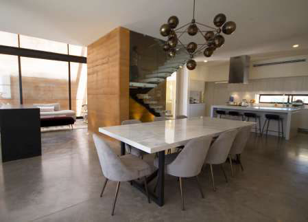
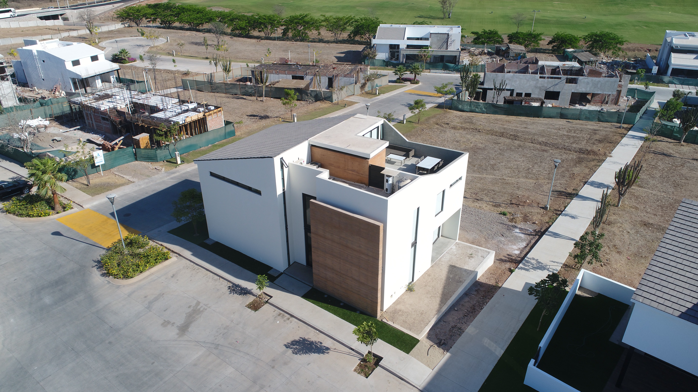
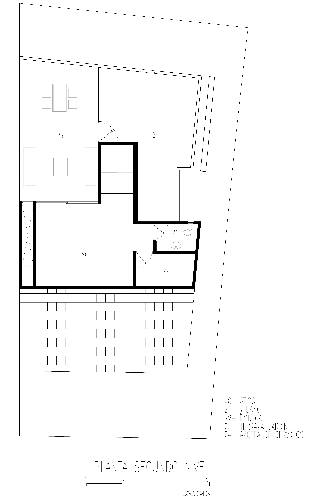
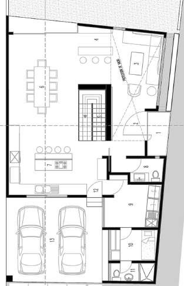
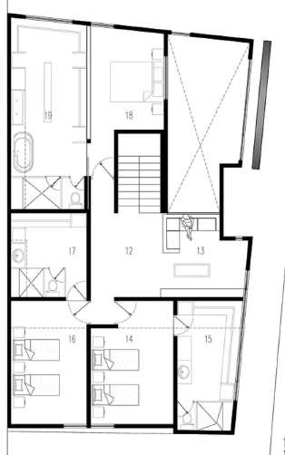

Rammed-earth home, 2019. The concrete floor extends the streetscape, while marble central stairs serve as a heat chimney up to the rooms and roof terrace.

Marble central stairs, serving as a heat chimney.
The concrete floor extends the streetscape up to the rooms and roof terrace.
San Javier 245 is a rammed-earth home. The concrete floor extends the streetscape into the house.
Marble central stairs serve as a heat chimney, drawing residents up to the rooms and the roof terrace.



